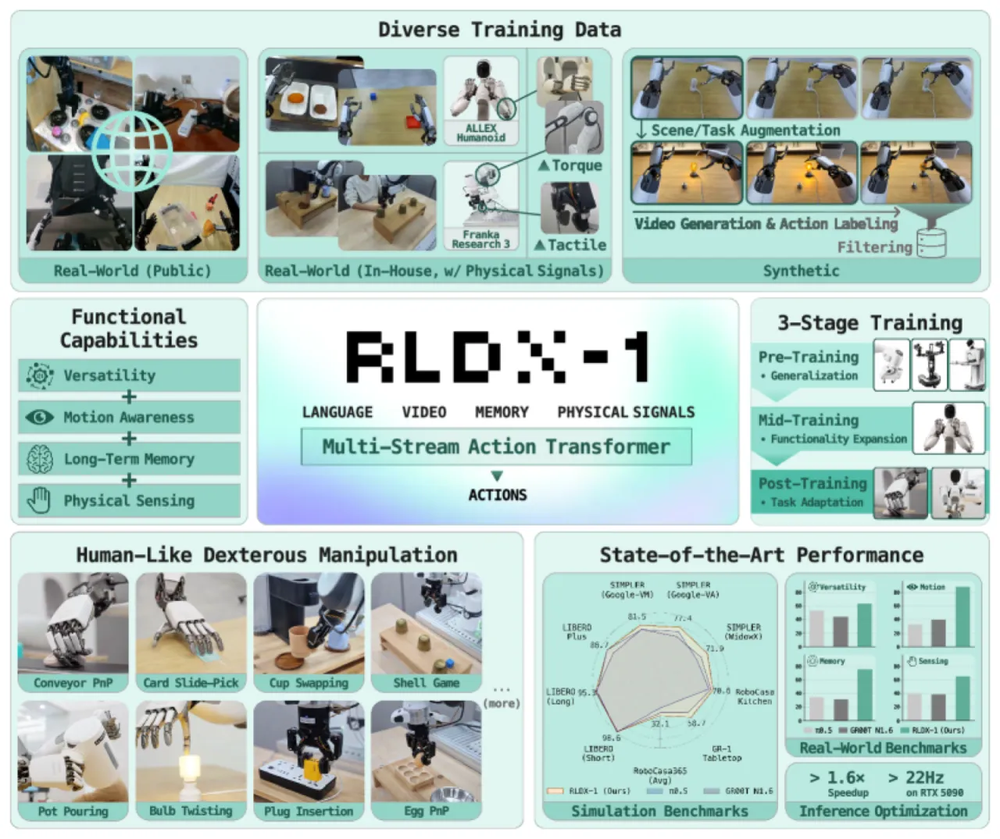
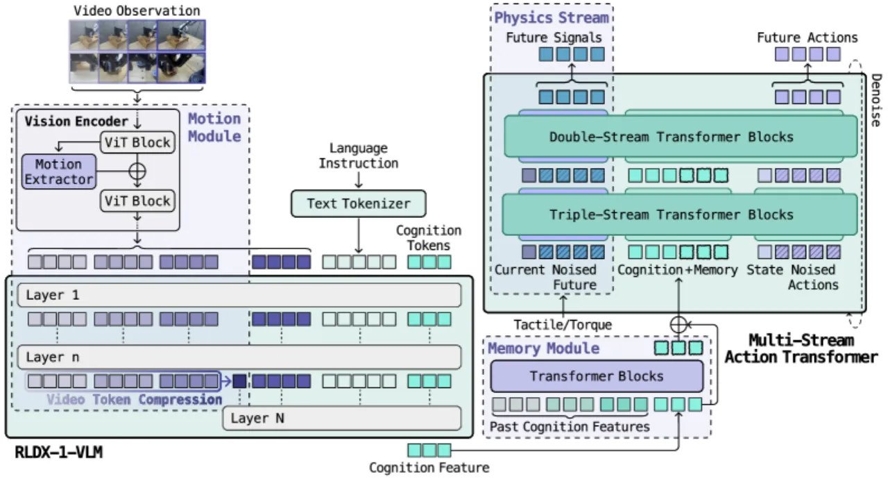
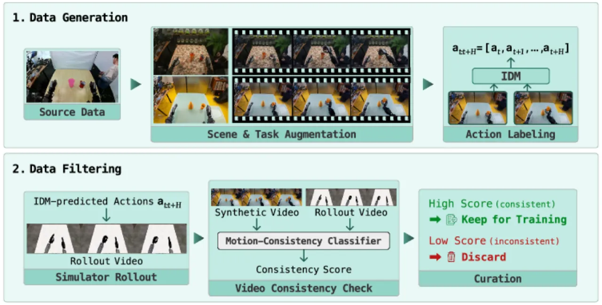
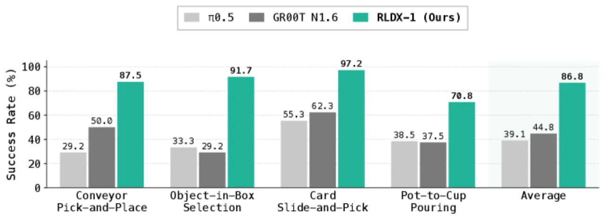

现有 Vision-Language-Action（VLA）模型通过大规模预训练获得了"通用智能"（versatile intelligence），但仍难以应对真实世界中需要运动感知、长时记忆与物理感知的复杂灵巧操作任务。RLDX-1 提出 Multi-Stream Action Transformer（MSAT）架构，通过模态专用流与跨模态联合自注意力统一整合上述三大功能，并结合合成数据管线、三阶段训练流程与推理优化，在仿真与多平台真实机器人实验中全面超越 π₀.₅ 和 GR00T N1.6。
VLA 模型通过继承预训练 Vision-Language Model 的通用理解与语言条件泛化能力，在机器人操作领域取得了显著进步——但这种"通用智能"并不等于"灵巧操作所需的全部能力"。在动态环境（如传送带上的移动物体）、需要记住历史交互状态的任务、以及依赖触觉/力矩反馈的接触丰富场景中，现有 VLA 普遍失效。
"While Vision-Language-Action models (VLAs) have shown remarkable progress toward human-like generalist robotic policies through the versatile intelligence … they still struggle with complex real-world tasks requiring broader functional capabilities (e.g. motion awareness, long-term memory, and physical sensing)."

RLDX-1 包含四大核心组件：(1) Multi-Stream Action Transformer（MSAT）神经网络架构；(2) 基于运动一致性过滤的合成数据生成管线；(3) 预训练 → 中训练 → 后训练的三阶段训练流程；(4) 静态图转换与算子融合推理优化。

MSAT 在标准 flow-matching VLA 架构（π₀）基础上，为每种模态分配专用流（dedicated stream），通过 joint self-attention 实现跨模态交互，同时保留各模态专属参数。具体地：

合成数据管线共生成 150K 条人形机器人演示数据，用于补充真实数据中稀缺的灵巧操作场景。两阶段过滤机制有效剔除不合格样本，在 GR-1 Tabletop 基准上，加入合成数据后成功率相对仅用真实数据提升了 9.1%（41.0% → 50.1%）。
通过两项关键技术实现 1.63× 端到端推理加速（71.2ms → 43.7ms）：
实验在仿真基准（LIBERO、SIMPLER、RoboCasa、GR-1 Tabletop）和三类真实机器人平台（OpenArm 28-DoF 人形、ALLEX 48-DoF 人形、Franka Research 3 单臂）上进行，主要对比 π₀-FAST、π₀、π₀.₅、GR00T N1.5、GR00T N1.6。
| 方法 | LIBERO Short | LIBERO Long | LIBERO Avg | LIBERO-Plus | SIMPLER Google-VM | SIMPLER WidowX |
|---|---|---|---|---|---|---|
| π₀-FAST | 93.9 | 60.2 | 85.5 | 64.2 | 61.9 | 48.3 |
| π₀ | 97.1 | 85.2 | 94.1 | 54.6 | 58.8 | 27.1 |
| π₀.₅ | 98.0 | 92.0 | 96.9 | 86.5 | 72.7 | 46.9 |
| GR00T N1.6 | 97.4 | 94.4 | 96.7 | 72.6 | 76.1 | 57.1 |
| RLDX-1（本文） | 98.6 | 95.3 | 97.8 | 86.7 | 81.5 | 71.9 |
| 方法 | RoboCasa Kitchen | GR-1 Tabletop | RoboCasa365 Comp.-S | RoboCasa365 Comp.-U | RoboCasa365 Avg |
|---|---|---|---|---|---|
| π₀ | 62.5 | 13.6 | 6.1 | 1.1 | 14.8 |
| π₀.₅ | 62.1 | 15.4 | 7.1 | 1.2 | 16.9 |
| GR00T N1.5 | 65.7 | 48.0 | 9.6 | 4.4 | 20.0 |
| GR00T N1.6 | 66.2 | 47.6 | 12.6 | 2.6 | 26.9 |
| RLDX-1（本文） | 70.6 | 58.7 | 19.0 | 5.6 | 32.1 |

在 ALLEX 人形基准上，关键结果如下（作者原文引用）：
论文对多个设计维度进行消融验证：
RLDX-1 的中训练阶段专门针对 ALLEX 人形和 Franka Research 3 两类平台进行具身特化。这意味着应用于其他机器人形态时，需重新采集数据并重复多阶段训练流程，跨具身零样本迁移能力未被系统评估。（inferred）
合成数据管线基于视频扩散模型生成多样化演示，再通过两阶段过滤（VLM 视频质量过滤 + 运动一致性过滤）筛选有效样本。若扩散模型对特定场景分布外泛化能力不足，或过滤器产生漏判，合成数据的有效性将受限。当前消融仅验证了 GR-1 Tabletop 基准上的效果。（inferred）
静态图转换与 kernel 融合优化高度依赖 NVIDIA GPU 运行环境。在边缘设备或不同硬件栈（如 ARM CPU、其他加速器）上，所报告的 1.63× 加速收益可能无法复现。（inferred）
Memory Module 以固定间隔（H+1 时步）采样并维护固定数量（n_mem）的历史认知特征。对于需要跨越更长时间跨度或更细粒度历史状态的任务，该设计的扩展性未被论文深入讨论。（inferred）